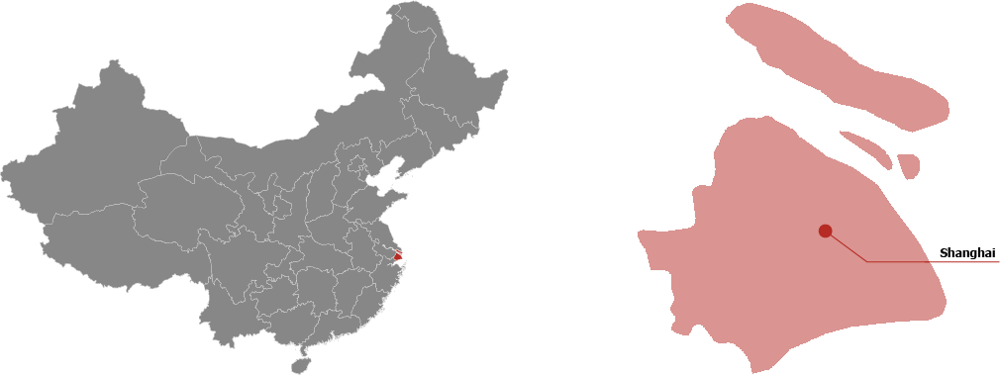

Shanghai
Shanghai, également connue sous le nom de Shanghaï, est la ville la plus peuplée de Chine. Elle est également l'une des plus grandes mégapoles du monde avec plus de 27 millions d'habitants.
 Les plats traditionnelles de la province :

XiaoLongBao

Crabe Poilu

Sheng Jian Bao
Attractions

Le Bund

La perle de l'orient

People’s Square

La Vieille Ville
Culture
XiaoLongBao
Crabe Poilu
Sheng Jian Bao
Le Bund
La perle de l'orient
People’s Square
La Vieille Ville
Shanghai est réputée pour son mélange d'Orient et d'Occident. La capitale économique de la Chine est synonyme de changement, de complexité et surtout d'avenir. Elle est aujourd'hui l'une des métropoles les plus puissantes du monde au même titre que New York, Londres, Tokyo, Paris ou Singapour.